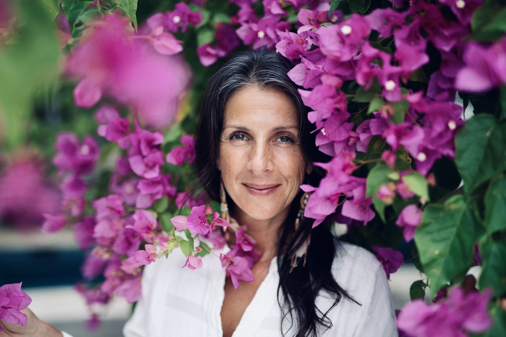

This year-long journey is how we find them together.

"One of the most tuned-in beings I know."— Luke Storey, The Life Stylist Podcast
Dear beautiful soul,
I want to tell you something that nobody told me for a very long time:
If you're reading this, I already know something about you.
You've done the work. You've tried the breathwork, the meditation, the retreats, maybe therapy, maybe plant medicine. You've read books that made you cry because someone finally put words to what you've been feeling your whole life.
And you've had moments — real moments — where you touched something true inside yourself. Where you felt, even if just for a breath, the version of you that existed before the conditioning. Before the stories. Before the world told you who to be.
But then life pulls you back. The patterns return. And you're left with a quiet ache that sounds something like this:
I hear you. I've been you.
That illness — and the years of healing that followed — taught me something I now teach everyone who comes to me:
The reason weekend retreats and eight-week courses don't create lasting change is because lasting change requires two ingredients the modern world has forgotten: love and time. Not more information. Not another technique. Love. And time.
That's why I created this.
A year-long journey. Three sacred immersions. One complete return to yourself.
This is not a course. I don't have a protocol. When people ask me "how do you work?" I say, "I can't tell you how I would work with you until you tell me what you want from me." Because everybody's journey is so extremely individual that we can only be successful if we allow ourselves to meet each person exactly where they are.
What I can tell you is what this year is designed to do:
Over three immersive blocks — each one a six-day deep dive in either Spain or Costa Rica — we will journey through every level of healing until you arrive at home within every aspect of your being.
Not visiting your truth on weekends. Living from it.
Group Sapphire 2026 — Limited Enrollment
18 days over one year. Three immersions. Each one builds on the last.
We begin by stripping away everything that isn't you. The conditioning. The beliefs you absorbed from family, religion, culture, pain. Through live readings from your Akashic Records, I will show you the blueprint your soul brought into this life — the one that was always there, underneath everything.
Now that you've met your true self, this block is about letting your inner world and outer world finally match. I'll reveal the structure and concept of your essence for this lifetime — a clear vision of what your soul is here to accomplish. Then we practice living from it.
The final block is about never needing me again. You'll learn to access your own Akashic Records — your own guidance system for life. You'll trust your own powers completely. And you'll step into the wholeness that was always waiting for you.
I want to be honest with you about something.
I don't stand above my participants. Ever. If I'm above, then how can I be with you? We work best face to face — and everyone feels far more courageous to go somewhere that hurts or somewhere uncomfortable when they're not alone in it.
Between blocks, we have monthly Zoom calls. You are never left alone with your process. And if you cannot travel to Spain or Costa Rica, there is an online participation option — you can join the live sessions remotely.
Also: I prepare the food. Breakfast and lunch. Michelin-trained hands making meals with the same love I bring to your soul. Because nourishing is nourishing, whether it's a body or an energy field.
This is what I came here for — to remind everybody of who they really are. ✦
In their own words.
"I arrived carrying decades of weight I didn't even know was there. Cru doesn't just see your energy — she sees the original you, the one that existed before the world got its hands on you. Over the course of this year, I didn't just change. I remembered. And now I live from that place every single day."
"I've done every certification. Every training. Every retreat you can imagine. None of it comes close. Cru doesn't teach you healing — she reminds you that you already are one. The moment she activated my 8th Chakra, something shifted that I cannot put into words. But I can tell you I'm not the same person I was a year ago."
"I came because I felt lost. I stayed because I found myself. Cru's ability to read your Akashic Records and show you things about your soul that you've never spoken aloud — it's unlike anything that exists. But what changed my life wasn't the readings. It was the love. The relentless, unconditional love she holds for every person in that room."
Your investment for the full year
Or: 6 payments of $2,500 · 3 payments of $5,000
* Lodging and dinner at retreat locations arranged separately
Each cohort is kept intentionally small so I can work with every participant individually. When spots are filled, the next group opens.
This isn't a transaction. It's a relationship. I don't have a protocol — I have a deep commitment to meeting you exactly where you are. If after Block I you feel this isn't aligned with your path, we'll talk, human to human, and find what is. I've never had a single participant regret walking through this door.
I read every message personally — love@cru-essence.com
Women and men who feel called to live from their truth. Whether you want to become a healer, deepen your own journey, or simply arrive at a place of peace — this is the space for it. No prior healing experience is needed. Your soul already knows the way.
Most healing modalities give you tools. This gives you yourself. The difference is the depth of the Akashic Records work, the length of time (a full year), and the fact that I don't apply a protocol — I meet each person's soul individually. Every graduate I've worked with has said the same thing: "This was unlike anything I've ever experienced."
Spain and Costa Rica. Training hours are 6 AM – 2 PM (Costa Rica) or 8 AM – 4 PM (Spain). Both locations were chosen for their energy, beauty, and capacity to hold this work.
There is an online participation option — you can join remotely alongside the live sessions. Many participants do a mix. Write to me and we'll figure out what works for your life.
No. The sacred medicine journey in Block III is completely optional. It's offered the evening before two days of silence. The training is profoundly transformative with or without it.
You're still reading. That's how you know. Something in you recognizes what this is. Trust that. And if you want to talk it through first — write to me. I read every message.
Nothing brings more contentment and joy than living in the knowing and expression of your own truth. You are a precious gift to the grand symphony of creation.
I'm Ready →Group Sapphire 2026 · Limited Enrollment · love@cru-essence.com
You are loved. 🍓